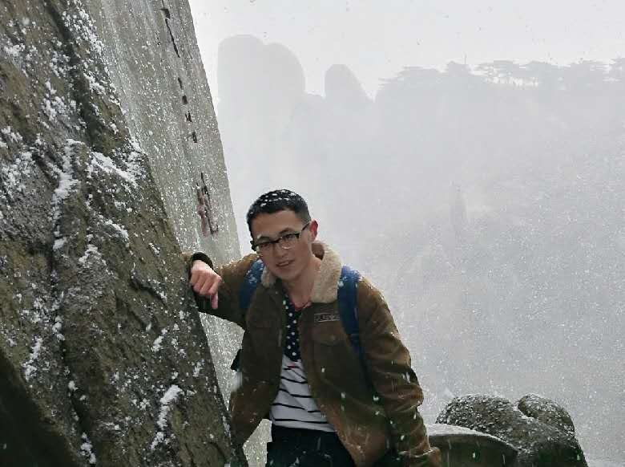
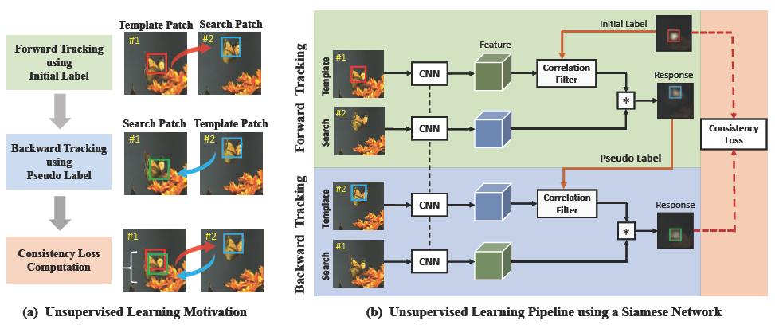
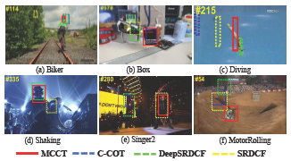
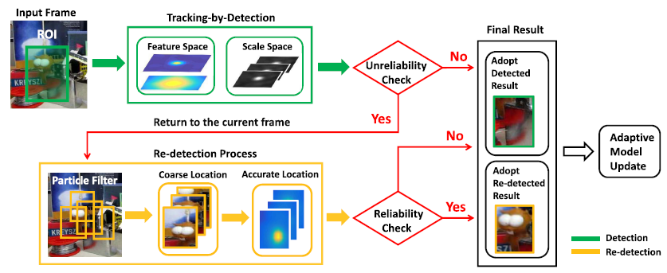
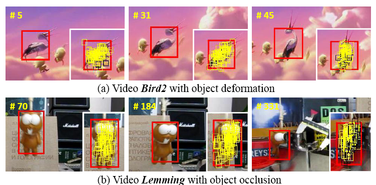

|  |
Ning Wang (王宁)
Ph.D. candidate University of Science and Technology of China Email: wn6149 AT mail DOT ustc DOT edu DOT cn |
I am currently a third-year Ph.D. student in University of Science and Technology of China (USTC). My supervisors are Prof. Houqiang Li and Prof. Wengang Zhou. Prior that, I received my B.S. degree from Tianjin University (TJU) in 2016.
My research interests are in computer vision, and I am currently working on visual object tracking.
|

|
Unsupervised Deep Tracking
Ning Wang, Yibing Song, Chao Ma, Wengang Zhou, Wei Liu and Houqiang Li The IEEE Conference on Computer Vision and Pattern Recognition (CVPR), 2019 [pdf] [code] [bibtex] |
|

|
Multi-cue Correlation Filters for Robust Visual Tracking
Ning Wang, Wengang Zhou, Qi Tian, Richang Hong, Meng Wang and Houqiang Li The IEEE Conference on Computer Vision and Pattern Recognition (CVPR), 2018 [pdf] [code] [bibtex] |
|

|
Reliable Re-detection for Long-term Tracking
Ning Wang, Wengang Zhou and Houqiang Li IEEE Transactions on Circuits and Systems for Video Technology (TCSVT), 2018 [pdf] [code] [bibtex] |
|

|
Robust Object Tracking Via Part-Based Correlation Particle Filter
Ning Wang, Wengang Zhou and Houqiang Li IEEE International Conference on Multimedia and Expo (ICME), (Oral), 2018 [pdf] [bibtex] |
| May. 2018 - Aug. 2018 Research Intern, Tencent AI Lab |